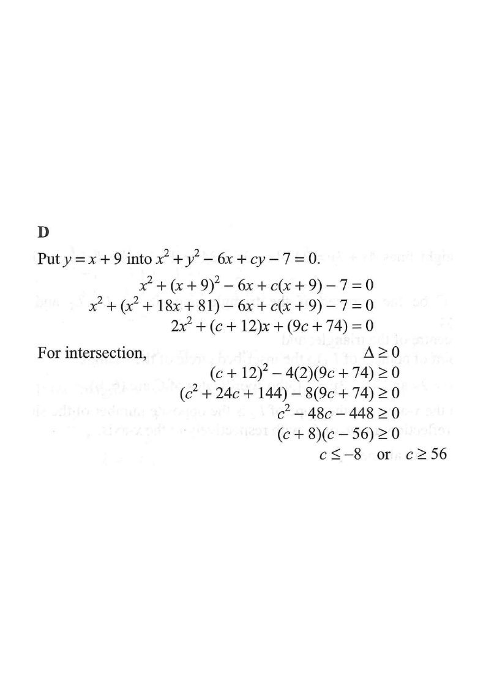

Line $x-y+9=0$Circle $x^2+y^2-6x+cy-7=0$Centre $(3,\,-\tfrac{c}{2})$Point on lineIntersection point(s)
Hover a step on the right — the figure updates. Use the slider to change $c$.
Question
Find the range of values of $c$ such that the circle
$x^{2}+y^{2}-6x+cy-7=0$ and the straight line
$x-y+9=0$ intersect.
A. $-56 \le c \le 8$
B. $-8 \le c \le 56$
C. $c \le -56$ or $c \ge 8$
D. $c \le -8$ or $c \ge 56$
Answer: D

Figure (original exam diagram)
Step-by-step Solution
Step 1 · Substitute the line into the circle
The line gives $y=x+9$. Put this into the circle equation
$x^{2}+y^{2}-6x+cy-7=0$:
$$x^{2}+(x+9)^{2}-6x+c(x+9)-7=0$$
Expand:
$$x^{2}+x^{2}+18x+81-6x+cx+9c-7=0$$
Step 2 · Collect into a quadratic in x
Group the terms of the same degree:
$$2x^{2}+(c+12)x+(9c+74)=0$$
So $a=2$, $b=c+12$, $d=9c+74$ (the constant).
Method of Substitution\(y=x+9\ \text{substituted into the circle gives a quadratic in }x\)Collecting like terms gives \(2x^{2}+(c+12)x+(9c+74)=0\).
Step 3 · Condition for intersecting
For the line to intersect the circle, this quadratic must have at least one
real root (one root = tangent, two roots = two crossings).
Hence the discriminant must satisfy
$$\Delta = b^{2}-4ad \;\ge\; 0$$
If $\Delta<0$ the line misses the circle entirely.
Discriminant of a Quadratic Equation\(\Delta=b^{2}-4ac\)The line meets the circle exactly when \(2x^{2}+(c+12)x+(9c+74)=0\) has real roots, i.e. \(\Delta\ge0\).
Step 4 · Form and expand the inequality
$$(c+12)^{2}-4(2)(9c+74)\;\ge\;0$$
$$c^{2}+24c+144-8(9c+74)\;\ge\;0$$
$$c^{2}+24c+144-72c-592\;\ge\;0$$
$$c^{2}-48c-448\;\ge\;0$$
Step 5 · Factorise and solve
Factorise the quadratic: we need two numbers with product $-448$ and sum $-48$,
namely $-56$ and $+8$:
$$(c+8)(c-56)\;\ge\;0$$
Solving: $\;c+8\ge0$ and $c-56\ge0$, or $c+8\le0$ and $c-56\le0$.
At $c=-8$ or $c=56$ the line is tangent to the circle (still counts as intersecting).
PRACTICESimilar question — try it yourself
Question. Find the range of values of \(c\) such that the circle \(x^{2}+y^{2}-4x+cy+6=0\) and the straight line \(x-y+2=0\) intersect. A. \(-20\le c\le4\) B. \(-4\le c\le20\) C. \(c\le-20\) or \(c\ge4\) D. \(c\le-4\) or \(c\ge20\) [1 mark]
Show the worked solution
Step 1. The line gives \(y=x+2\); substitute: \(x^{2}+(x+2)^{2}-4x+c(x+2)+6=0\).
Step 2. Expand and collect: \(2x^{2}+(c+0)x+(2c+10)=0\), i.e. \(2x^{2}+cx+(2c+10)=0\).
Step 3. For an intersection the discriminant must satisfy \(\Delta=c^{2}-8(2c+10)\ge0\).
Step 4. \(\Delta=c^{2}-16c-80=(c+4)(c-20)\), so \((c+4)(c-20)\ge0\).
Step 5. Hence \(c\le-4\) or \(c\ge20\); at the two end values the line is a tangent.
Answer: D. \(c\le-4\) or \(c\ge20\)
Solving a Quadratic Inequality\((x-\alpha)(x-\beta)\ge0\ (\alpha<\beta)\ \Longrightarrow\ x\le\alpha\ \text{or}\ x\ge\beta\)\((c+8)(c-56)\ge0\) gives \(c\le-8\) or \(c\ge56\).
Final Answer
$c \le -8$ or $c \ge 56$ → Option D
Key idea: substituting the line into the circle and requiring
$\Delta \ge 0$ converts the geometry problem into a quadratic inequality in $c$.